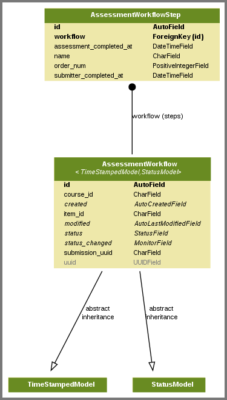
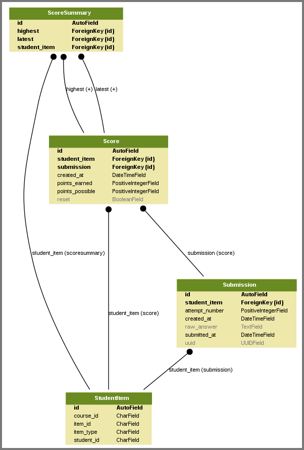
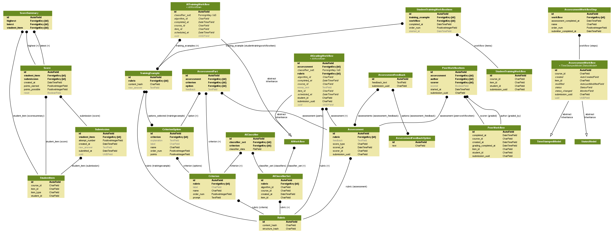

6.6. Open Response Assessment Data#
This section describes the data schema for the edX open response assessment (ORA) system.
The schema includes a number of tables, and the ORA system offers a range of uses. As a result, the data can be complex. EdX recommends that you set up a course on a devstack instance so that you can create assessments and test the possible learner interactions.
For more information about how course teams can set up open response assessments, see Create an Open Response Assessment Assignment.
For more information about how learners respond to these assessments, see learners:SFD_ORA.
For more information about setting up an Open edX devstack instance, see Installing the Open edX Developer Stack.
History: These tables were added to the ora subdirectory of the
{org}-{date}.zip database data file in data packages beginning with the 13
Dec 2015 export. The data in these tables is for the current, fully supported
version of the open response assessment feature. Data for the initial
version (which was deprecated in May 2014) is not included.
6.6.1. Workflow Tables#
The ORA workflow tables store data about a response that a learner has submitted as it goes through each of the steps defined for the ORA component.
The top level table is AssessmentWorkflow, which specifies the steps that a
learner must complete for the ORA component.

The self assessment step in an ORA component is a required, single step
process. The AssessmentWorkflowStep table stores data about this step. A
component can also include a training step, a peer evaluation step, or both.
Additional tables store data for these optional steps.
StudentTrainingWorkflowstores data about a learner’s evaluation of a set of instructor-provided samples, including what evaluations the learner has completed and when each evaluation was made.PeerWorkflowstores data about the progress of a response as it undergoes peer grading, which can involve input from one or more peers.
6.6.2. Assessment and Rubric Tables#
The assessment tables store the assessments that have been made for a particular response. Assessments can be self assessments, submitted by learners about their own work, or peer assessments, which are submitted by other learners. Assessments are scored against rubrics.
A Rubric specifies guidelines on how to assess submissions. Each rubric
consists of a set of Criterion entries, each of which has a set of
CriterionOptions.
For example, a criterion for assessing writing might be, “The essay is well structured”. The options that a learner can choose for that criterion might be, “No evidence of structure; rambles”, “There is an attempt at organizing the material, but it doesn’t flow very well”, and “Clear structure from beginning to end”.
The data for a rubric is written to these tables at the time of assessment. If a course team makes a change to the rubric for a problem, these tables contain different entries for assessments that were done before, and after, the change.
6.6.3. Submission, StudentItem, and Score Tables#
The Submission table represents the responses made by a learner for a given
component in a given course. Depending on the configuration of the ORA
component, a learner can contribute multiple submissions for a given problem.
Note
The Submission table includes only text responses. The data
package does not include files uploaded by learners to accompany their text
responses.
The StudentItem table identifies a learner and the ORA component in the
course. Rows in this table are linked to all submissions made by that learner
for that component, as well as to each Score for that component.

6.6.4. Detailed ERD#
This entity relationship diagram (ERD) provides a reference for the tables involved, their columns, and their relationships.
Some of the tables modeled in this diagram have many to many relationships, in
which case there is an additional table that stores data to reflect those
relationships. An example is the
assessment_trainingexample_options_selected table for the relationship
between the CriterionOption and TrainingExample tables, identified on
the diagram by options_selected (trainingexample).

You might need to download this image to view it in sufficient detail. To ensure that this diagram can be viewed at full size, a duplicate of this image file is also available on the Entity Relationship Diagram for ORA Data page of the Open edX Analytics wiki.
6.6.4.1. Notes#
Anonymous learner IDs are used throughout the ORA2 data. To link to full user data, you must join to the
student_anonymoususeridtable. For more information, see Columns in the student_anonymoususerid Table.The ERD includes several tables that include
AIin the name. These tables were used for an edX prototype of an example based assessment system. That prototype system is not yet in general use, so the edX data packages do not include these tables.